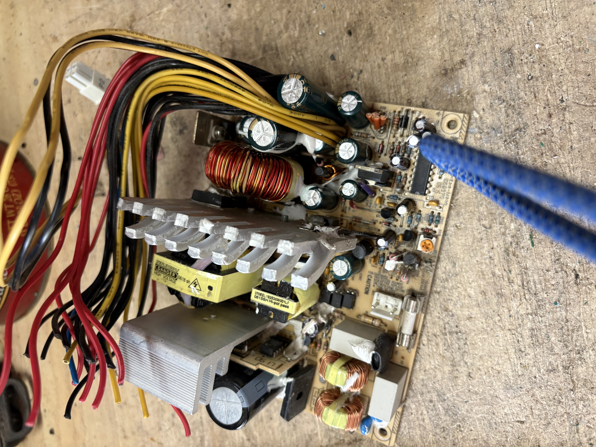
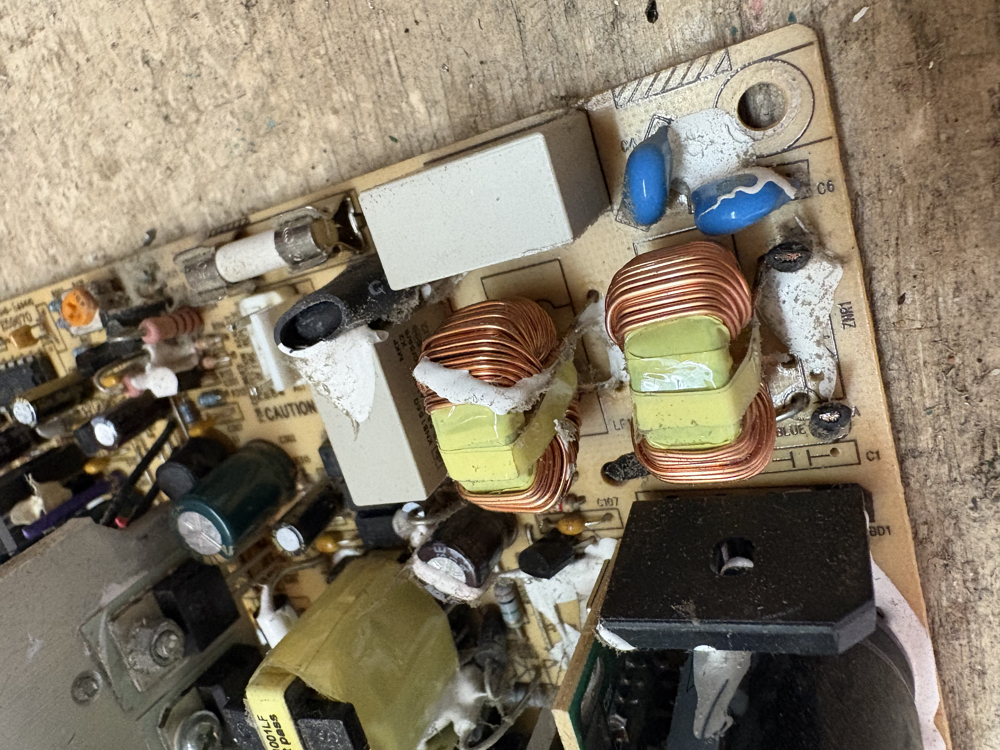

Different wires can contain different recyclable metals.
Copper wire is one of the most common and useful types of wire found in electronics.
It is often inside cords, appliances, TVs, computers, and many other items that plug
into the wall. Copper is valuable because it can be recycled and reused.

Some wires may also contain aluminum or steel. Aluminum wire is usually silver and
lighter than copper. Steel wire is stronger and is usually magnetic. Sorting these
wires correctly helps make recycling cleaner and more useful.

When Sue sorts wires, she looks at color, weight, and material. Copper usually has
a reddish or orange color when it is bare. Aluminum is usually silver and lighter.
These details help her identify the wire type.